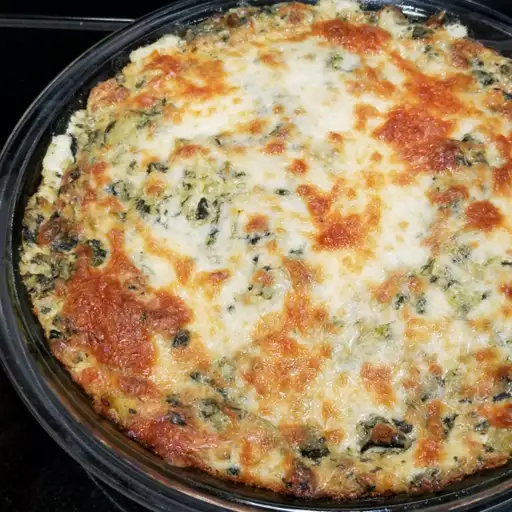

Hot Spinach Artichoke Dip

Description
A hot, delicious, and cheesy spinach artichoke dip that is the perfect way to get your friends and family to start enjoying the party.
Ingredients
- Cream Cheese
- Mayonnaise
- Cheeses: grated Parmesan, grated Romano, and shredded mozzarella
- Garlic
- Spices and seasonings: dried basil, garlic salt, salt, and pepper
- Artichoke hearts
- Spinach
How to make the Hot Spinach Artichoke Dip
- Mix all the ingredients (except for the mozzarella) together.
- Transfer the mixture to a prepared baking dish. Top with cheese.
- Bake the spinach artichoke dip in the preheated oven until bubbly.